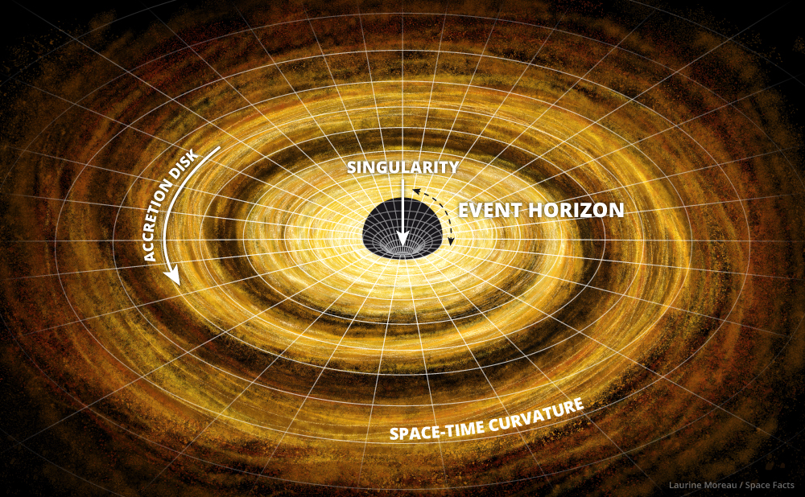

The Universe is all of space and time and their contents, including planets, stars, galaxies, and all other forms of matter and energy.
The Big Bang Theory
Astronomers calculated this figure by measuring the composition of matter and energy density in the universe, which enabled them to determine how fast the universe expanded in the past. As a result, researchers could turn back the hands of time and pinpoint when the Big Bang occurred. The time in between that explosion and now makes up the age of the universe.
The Galaxies
A galaxy is a massive, gravitationally bound system that consists of stars, stellar objects (such as
brown dwarfs and neutron stars), nebulae, an interstellar medium of gas and dust, black holes, and
an
unknown component of dark matter. Examples of galaxies range from dwarfs with as few as ten million
stars to giants with a hundred trillion stars or more, each orbiting through their galaxy.
There are probably more than 170 billion galaxies in the observable universe.
Galaxies can range in size from a dwarf with as few as ten million stars to massive giant galaxies
with
a hundred trillion stars. Each star orbits its galaxies own centre of mass and it is estimated that
there are more than 170 billion galaxies in the observable universe.
STARS
Gently singing Twinkle, twinkle, little star may lull a baby to sleep, but beyond the confines of Earth’s
atmosphere, the words aren’t exactly accurate. A correct, albeit less soothing, rendition might be:
Emit,
emit, gigantic ball of gas.
Stars are huge celestial bodies made mostly of hydrogen and helium that produce light and heat from the
churning nuclear forges inside their cores. Aside from our sun, the dots of light we see in the sky are
all
light-years from Earth. They are the building blocks of galaxies, of which there are billions in the
universe. It’s impossible to know how many stars exist, but astronomers estimate that in our Milky Way
galaxy alone, there are about 300 billion.
The life cycle of a star spans billions of years. As a general rule, the more massive the star, the
shorter
its life span.
Birth takes place inside hydrogen-based dust clouds called nebulae. Over the course of thousands of
years,
gravity causes pockets of dense matter inside the nebula to collapse under their own weight. One of
these
contracting masses of gas, known as a protostar, represents a star’s nascent phase. Because the dust in
the
nebulae obscures them, protostars can be difficult for astronomers to detect.
As a protostar gets smaller, it spins faster because of the conservation of angular momentum—the same
principle that causes a spinning ice skater to accelerate when she pulls in her arms. Increasing
pressure
creates rising temperatures, and during this time, a star enters what is known as the relatively brief T
Tauri phase.
Millions of years later, when the core temperature climbs to about 27 million degrees Fahrenheit (15
million
degrees Celsius), nuclear fusion begins, igniting the core and setting off the next—and longest—stage of
a
star’s life, known as its main sequence.
Most of the stars in our galaxy, including the sun, are categorized as main sequence stars. They exist
in a
stable state of nuclear fusion, converting hydrogen to helium and radiating x-rays. This process emits
an
enormous amount of energy, keeping the star hot and shining brightly.
Antares
Antares is a red supergiant star burning 10,000 times brighter than our own sun 550 light years away in the constellation of Scorpius. The star is the 16th brightest in the night sky, and can be seen in the Northern Hemisphere from late spring to early winter, where it shines with a variable magnitude of 0.9 to 1.8.
Polaris
Polaris, designated α Ursae Minoris, commonly the North Star or Pole Star, is the brightest star in the constellation of Ursa Minor. It is very close to the north celestial pole, making it the current northern pole star.
Betelguese
Betelgeuse is generally the ninth-brightest star in the night sky and second-brightest in the constellation of Orion. It is a distinctly reddish, semiregular variable star whose apparent magnitude varies between +0.0 and +1.3, the widest range of any first-magnitude star.
Canopus
Canopus is the brightest star in the southern constellation of Carina, and is located near the western edge of the constellation around 310 light-years from the Sun. Its proper name is generally considered to originate from the mythological Canopus, who was a navigator for Menelaus, king of Sparta.

Sun
The Sun, or Sol, is the star at the center of the Solar System. It is a nearly perfect sphere of hot plasma, with internal convective motion that generates a magnetic field via a dynamo process. It is by far the most important source of energy for life on Earth.
Sirius
Sirius A is known as a main sequence star, meaning like the sun it produces energy by fusing hydrogen atoms in its core. Sirius is the brightest star in the night sky and the nearest that can be seen without the aid of a telescope. Sirius B has a highly elliptical orbit around its larger companion.
Rigel
Rigel is estimated to have a maximum mass of around 18 times that of the sun. Rigel is estimated to have surface temperatures of around 12,000C (22,000F), more than twice as hot as the sun. Rigel is a blue supergiant star with a luminosity more than 100,000 times that of the sun.
Vega
Vega is the brightest star in the northern constellation of Lyra. It has the Bayer designation α Lyrae, which is Latinised to Alpha Lyrae and abbreviated Alpha Lyr or α Lyr.
VY Canis Majoris
VY Canis Majoris is around 4,000 light years from Earth in the constellation of Canis Major. It is one of the largest known stars in the Milky Way galaxy. VY Canis Majoris is a red hypergiant with a radius of around 1,500 times larger than the sun.
BLACK HOLE
Let's Talk about Black Holes
Black holes are among the strangest things in the universe. They are massive objects – collections of
mass –
with gravity so strong that nothing can escape, not even light. The most common types of black holes are
the
stellar-mass and supermassive black holes. Stellar-mass black holes are created when massive stars
explode,
leaving behind a black hole with the mass of just a few suns. Supermassive black holes exist in the
hearts
of galaxies and usually contain the mass equivalent of millions of suns.
The massive gravitational influence of a black hole distorts space and time in the near neighbourhood.
The
closer you get to a black hole, the slower time runs. Material that gets too close to a black hole gets
sucked in and can never escape.
Black holes have this incredible ability to literally stretch you into a long spaghetti-like strand.
Appropriately, this phenomenon is called 'spaghettification'. Look it up.
The way it works has to do with how gravity behaves over distance. Right now, your feet are closer to
the
centre of Earth and are therefore more strongly attracted than your head. Under extreme gravity, say,
near a
black hole, that difference in attraction will actually start working against you.
As your feet begin to get stretched by gravity's pull, they will become increasingly more attracted as
they
inch closer to the centre of the black hole. The closer they get, the faster they move. But the top half
of
your body is farther away and so is not moving toward the centre as fast. The result: spaghettification!
The “point of no return” around a black hole is called the “event horizon”. This is the region where the
gravity of the black hole overcomes the momentum of material spinning around it in the accretion disk.
Once
something cross the event horizon, it is lost to the pull of the black hole.

First Black Hole Photo
This is what a black hole looks like.
A black hole isn’t really a hole. It’s an object in space with incredible mass packed into a very small
area. All that mass creates such a huge gravitational tug that nothing can escape a black hole,
including
light.
“We have seen what we thought was unseeable,” Sheperd Doeleman said April 10 in Washington, D.C. “We
have
seen and taken a picture of a black hole,” he reported at one of seven concurrent news conferences.
Doeleman
is EHT’s director. He also is an astrophysicist at the Harvard-Smithsonian Center for Astrophysics in
Cambridge, Mass. Results from his team's work appear in six papers in the Astrophysical Journal Letters.
The concept of a black hole was first hinted at back in the 1780s. The mathematics behind them came from
Albert Einstein’s 1915 general theory of relativity. And the phenomenon got its name “black hole” in the
1960s. But until now, all “pictures” of black holes have been illustrations or simulations.
WHAT IS A PLANET?
The answer to this question is a highly controversial one. This has not always been the case, though. In fact, before 1978 the definition of a “planet” was not really necessary. Until that time a planet simply meant a body in orbit around the Sun, that reflected sunlight, and was not a planetary moon, asteroid, or comet. However, with the discovery of Pluto’s moon Charon in 1978 scientists were able to calculate Pluto’s mass much more accurately than ever before and soon realized that it was much smaller than they had previously believed. At a tiny fraction of the mass of Mercury, Pluto was clearly a body much smaller than any other planet. This discovery led some to question whether Pluto was actually a planet or some other type of object. In the 1990s and early 2000s the discovery of several objects in the outer solar system similar in size to Pluto made it all but necessary to come to a definitive definition of a planet. Such a definition was needed to separate those types of objects like Pluto into a distinct class, otherwise all of the newly found objects would have to be called planets as well. In response to this uncertainty, the International Astronomical Union (IAU), the official governing body for matters concerning naming astronomical objects, came to a definition of the term “planet.” According to the IAU, a planet is a celestial body that meets the following criteria: is in orbit around the Sun, has sufficient mass for its self-gravity to overcome rigid body forces so that it assumes a hydrostatic equilibrium (nearly round) shape, and has cleared the neighbourhood around its orbit.
Earth
Earth, our home, is the third planet from the sun. It's the only planet known to have an atmosphere containing free oxygen, oceans of water on its surface and, of course, life.
Earth is the fifth largest of the planets in the solar system. It's smaller than the four gas giants — Jupiter, Saturn, Uranus and Neptune — but larger than the three other rocky planets, Mercury, Mars and Venus.
The Earth’s rotation is gradually slowing. This deceleration is happening almost imperceptibly, at approximately 17 milliseconds per hundred years, although the rate at which it occurs is not perfectly uniform. This has the effect of lengthening our days, but it happens so slowly that it could be as much as 140 million years before the length of a day will have increased to 25 hours.
Saturn
Saturn is the sixth planet from the Sun and second largest planet of the Solar System in terms of diameter and mass. If compared, it is easy to see why Saturn and Jupiter have been designated as relatives. From atmospheric composition to rotation, these two planets are extremely similar. Because of these factors, Saturn was named after the father of the god Jupiter in Roman mythology.
Saturn’s atmosphere is composed of roughly 96% hydrogen and 4% helium, with trace amounts of ammonia, acetylene, ethane, phosphine and methane. It has a thickness of approximately 60 km. In the highest layer of the atmosphere, wind speeds reach 1,800 km/h, easily some of the fastest in the entire Solar System.
Mars
Mars is the fourth planet from the Sun and last of the terrestrial planets. Like the rest of the planets in the solar system (except Earth), Mars is named after a mythological figure - the Roman god of war. In addition to its official name, Mars is sometimes called the Red Planet because of the brownish-red color of its surface. Mars is the second smallest planet in the solar system behind Mercury.
It was believed life existed on Mars for much of the nineteenth century. The reason behind this belief was part mistake and part imagination. In 1877, the astronomer Giovanni Schiaparelli observed what he believed to be straight lines on Mars’ surface. As others noticed these lines, some suggested that they were too straight and could only be the work of intelligent life. The popular conclusion as to the nature of these lines was that they were canals constructed for irrigation purposes.
Venus
Venus is the second planet from the Sun and the third brightest object in Earth's sky after the Sun and Moon. It is sometimes referred to as the sister planet to Earth, because their size and mass are so similar. Venus is also the closest planet to Earth. The surface of Venus is hidden by an opaque layer of clouds which are formed from sulphuric acid. The planet is named for Venus, the Roman goddess of love and beauty and is the second largest terrestrial planet.
By the time of the ancient Romans it was understood that Venus was one of four planets other than the Earth. Being the brightest and most visible of these planets, the Romans named Venus after their goddess of love and beauty. As a result of its name, the planet has naturally been associated with love, femininity, and romance throughout history.
Jupiter
Named after the Roman king of the gods, Jupiter is fitting of its name. With a mass of 1.90 x 1027 kg and a mean diameter of 139,822 km, Jupiter is easily the largest and most massive planet in the Solar System. To put this in perspective, it would take 11 Earths lined up next to each other to stretch from one side of Jupiter to the other and it would take 317 Earths to equal the mass of Jupiter.
What is even more provocative is the theory that Jupiter is a failed star. Current scientific knowledge suggests that if Jupiter had, in fact, been roughly 80 times more massive, nuclear fusion would have taken place in its core; thus, Jupiter would have become a star, not a planet. Regardless, it is still tempting to look at the number of satellites orbiting Jupiter and consider it and its moons as, in many ways, a mini solar system.
Earth
Earth, our home, is the third planet from the sun. It's the only planet known to have an atmosphere containing free oxygen, oceans of water on its surface and, of course, life. Earth is the fifth largest of the planets in the solar system. It's smaller than the four gas giants — Jupiter, Saturn, Uranus and Neptune — but larger than the three other rocky planets, Mercury, Mars and Venus. The Earth’s rotation is gradually slowing. This deceleration is happening almost imperceptibly, at approximately 17 milliseconds per hundred years, although the rate at which it occurs is not perfectly uniform. This has the effect of lengthening our days, but it happens so slowly that it could be as much as 140 million years before the length of a day will have increased to 25 hours.
Saturn
Saturn is the sixth planet from the Sun and second largest planet of the Solar System in terms of diameter and mass. If compared, it is easy to see why Saturn and Jupiter have been designated as relatives. From atmospheric composition to rotation, these two planets are extremely similar. Because of these factors, Saturn was named after the father of the god Jupiter in Roman mythology. Saturn’s atmosphere is composed of roughly 96% hydrogen and 4% helium, with trace amounts of ammonia, acetylene, ethane, phosphine and methane. It has a thickness of approximately 60 km. In the highest layer of the atmosphere, wind speeds reach 1,800 km/h, easily some of the fastest in the entire Solar System.
Mars
Mars is the fourth planet from the Sun and last of the terrestrial planets. Like the rest of the planets in the solar system (except Earth), Mars is named after a mythological figure - the Roman god of war. In addition to its official name, Mars is sometimes called the Red Planet because of the brownish-red color of its surface. Mars is the second smallest planet in the solar system behind Mercury. It was believed life existed on Mars for much of the nineteenth century. The reason behind this belief was part mistake and part imagination. In 1877, the astronomer Giovanni Schiaparelli observed what he believed to be straight lines on Mars’ surface. As others noticed these lines, some suggested that they were too straight and could only be the work of intelligent life. The popular conclusion as to the nature of these lines was that they were canals constructed for irrigation purposes.
Venus
Venus is the second planet from the Sun and the third brightest object in Earth's sky after the Sun and Moon. It is sometimes referred to as the sister planet to Earth, because their size and mass are so similar. Venus is also the closest planet to Earth. The surface of Venus is hidden by an opaque layer of clouds which are formed from sulphuric acid. The planet is named for Venus, the Roman goddess of love and beauty and is the second largest terrestrial planet. By the time of the ancient Romans it was understood that Venus was one of four planets other than the Earth. Being the brightest and most visible of these planets, the Romans named Venus after their goddess of love and beauty. As a result of its name, the planet has naturally been associated with love, femininity, and romance throughout history.
Jupiter
Named after the Roman king of the gods, Jupiter is fitting of its name. With a mass of 1.90 x 1027 kg and a mean diameter of 139,822 km, Jupiter is easily the largest and most massive planet in the Solar System. To put this in perspective, it would take 11 Earths lined up next to each other to stretch from one side of Jupiter to the other and it would take 317 Earths to equal the mass of Jupiter. What is even more provocative is the theory that Jupiter is a failed star. Current scientific knowledge suggests that if Jupiter had, in fact, been roughly 80 times more massive, nuclear fusion would have taken place in its core; thus, Jupiter would have become a star, not a planet. Regardless, it is still tempting to look at the number of satellites orbiting Jupiter and consider it and its moons as, in many ways, a mini solar system.
Alright I think this is it... I hope you learned something about our own universe, our beautiful home created by GOD to us humans
But before we end this, I want you to watch this and be with me until in the end...
Billions of galaxies, Trillions of undiscovered stars, countless planets, immeasurable probability of living and here you are, you are the one in the 1 in a million chance, chance that you got, to have the opportunity to live in this place, fortunate? well it depends on how you live your life.
Life is too short to wake up with regrets. So love the people who treat you right. Forget about those who don’t. Believe everything happens for a reason. If you get a chance, take it. If it changes your life, let it. Nobody said life would be easy, they just promised it would most likely be worth it. Live life like you mean it! Stop procrastinating! Do all that you can...with all that you have...in the place that you are...right now! Life is too unpredictable to put things off and not take it seriously.
You only live once, but if you do it right, once is enough!